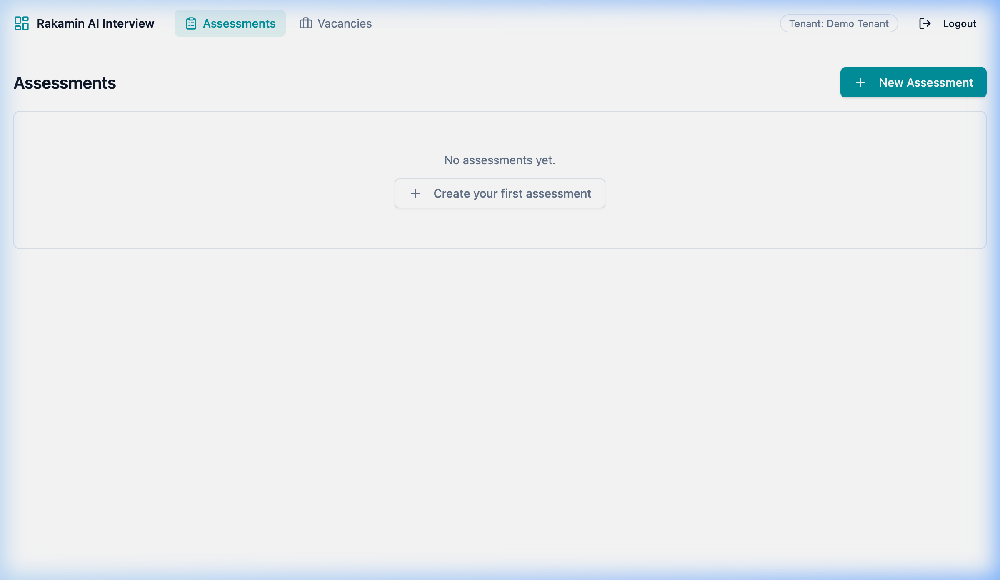
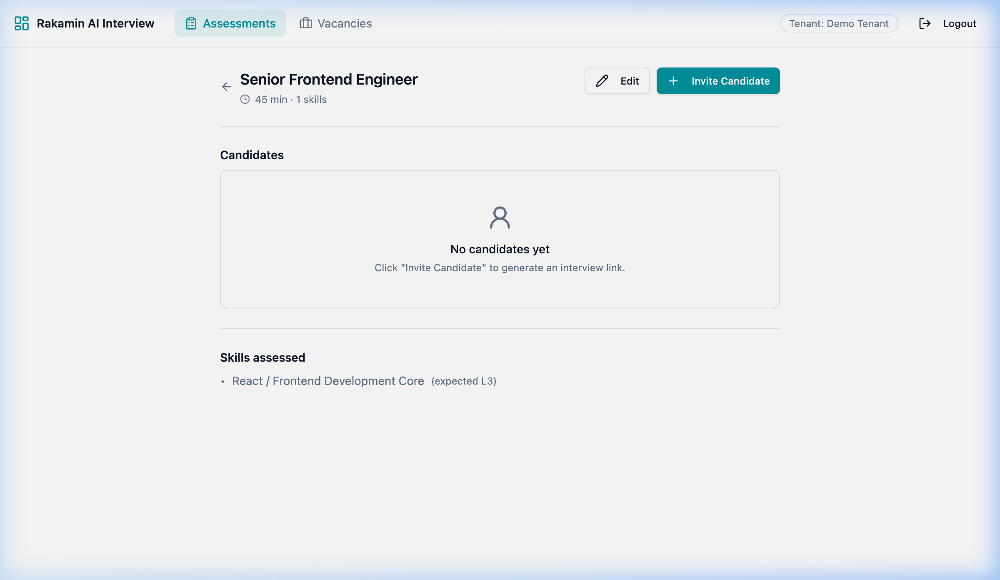
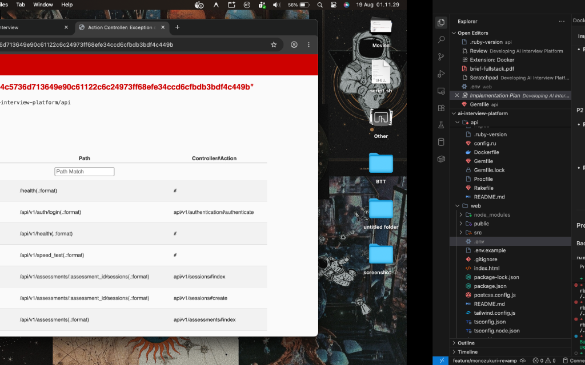
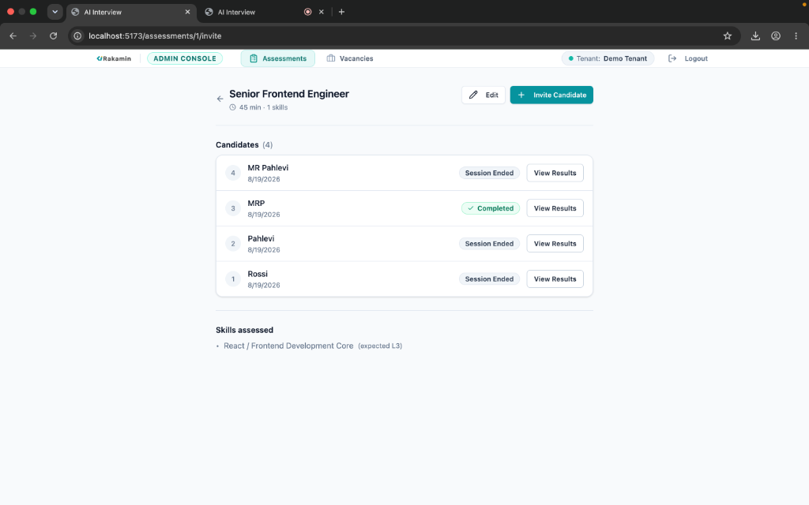

Laporan ini menyajikan hasil rekonstruksi dan penyempurnaan menyeluruh (fullstack revamp) dari platform AI Interview Platform. Berlandaskan prinsip Monozukuri (Pengembangan Produk Berorientasi Kualitas & Keterampilan Terbaik), proyek ini menyelesaikan seluruh masalah mendasar (baseline bugs), meningkatkan UX/UI hingga standar enterprise modern, menambahkan fitur seleksi kandidat yang aman sesuai aturan privasi data, serta membangun harness pengujian otomatis (Automated Testing Harness) pada backend Rails dan frontend React.
v1beta ke v1alpha BidiGenerateContent pada model gemini-2.5-flash-native-audio-latest.gemini-3.6-flash pada v1beta dengan penanganan eksponensial untuk HTTP 429 Rate Limits.h-20, backdrop blur, active pill tab, serta layout container responsif max-w-6xl.Analisis Pengguna & Kebutuhan Industri:
Di pasar rekrutmen Indonesia yang bergerak cepat, penguji (assessors) dan recruiter memerlukan data evaluasi kompetensi kandidat yang presisi, cepat, dan objektif. Tanpa fitur identifikasi kandidat (nama & email) serta pemantauan wawancara live yang stabil, platform berisiko kehilangan konteks rekrutmen.
Kepatuhan UU PDP (Undang-Undang Perlindungan Data Pribadi No. 27 Tahun 2022):
tenant_id dan token undangan aman (invite_token 64-character hex).| Severity | Komponen | Masalah (Defect / Missing Spec) | Dampak terhadap Pengguna |
|---|---|---|---|
| P0 Critical | Backend / Live WS | Koneksi WebSocket audio terputus dengan error code 1008 karena URL v1beta. |
Kandidat tidak dapat melakukan wawancara audio AI real-time. |
| P0 Critical | Backend / REST API | Generasi Portofolio gagal (404 NOT_FOUND / status failed) karena model Gemini lama. |
Assessor tidak dapat melihat hasil evaluasi kandidat. |
| P1 High | Frontend UI | Teks tombol "Mic On" pada halaman wawancara memiliki kontras sangat rendah dan sulit dibaca. | Kandidat bingung apakah mikrofon sedang aktif atau mati. |
| P2 Medium | Database & UI | Email kandidat tidak tersimpan dan nama kandidat opsional/hilang pada modal undangan. | Recruiter kesulitan melacak kandidat mana yang memiliki hasil portofolio tersebut. |
| P3 Low | Admin Navigation | Navbar admin sangat kecil, layout sempit (max-w-2xl), tanpa efek frozen glass. |
Pengalaman pengguna admin terasa seperti MVP sederhana dan kurang profesional. |
Constraint Signal: Keterbatasan kuota Gemini API Free Tier (RPM Rate Limits) menyebabkan error transient HTTP 429 ketika regenerasi portofolio dipanggil beruntun. Hal ini ditangani dengan algoritma exponential backoff retry pada Faraday HTTP Client.
| Kriteria Evaluasi | Option A: Quick Patch (Minimalist Fix) | Option B: Monozukuri Fullstack Arch (Chosen) |
|---|---|---|
| Deskripsi Rencana | Mengganti string URL model secara langsung dan menambahkan inline CSS pada view. | Arsitektur Faraday Retry, migrasi DB kandidat, validasi RFC, dan Redesain Glassmorphism. |
| Product Impact | Rendah — Hanya memperbaiki bug tanpa meningkatkan estetika UI atau efisiensi seleksi. | Tinggi — Pengalaman Admin premium, informasi kandidat lengkap, dan koneksi audio stabil. |
| Ketahanan (Resilience) | Rendah — Langsung crash saat terjadi 429 Rate Limit dari Google Gemini API. | Tinggi — 5x percobaaan retry otomatis dengan penundaan eksponensial (3-30s). |
| Maintainability | Sulit diubah di masa depan, tidak ada pengujian otomatis. | Sangat Mudah — Terintegrasi dengan Vitest dan RSpec test suite. |
URI::MailTo::EMAIL_REGEXP.bg-emerald-950/80 text-emerald-300) lengkap dengan indikator animasi dot menyala.Bukti Pengujian Otomatis:
# Backend Rails RSpec Test Suite:
Finished in 1.05 seconds (files took 6.56 seconds to load)
8 examples, 0 failures
# Frontend React Vitest Test Suite:
✓ src/components/portfolio/SkillPortfolioCard.test.tsx (2 tests)
Test Files 1 passed (1) | Tests 2 passed (2)
Logika validasi email di Session.rb sengaja dirusak pada cabang eksperimen untuk memastikan testsuite menangkap kegagalan tersebut (Red state). Setelah terverifikasi, kode dikembalikan ke kondisi stabil (Green state).
AI Verification Moment:
Saat AI merekomendasikan URL WebSocket wss://generativelanguage.googleapis.com/ws/google.ai.generativelanguage.v1beta.GenerativeService.BidiGenerateContent, pengujian menunjukkan error 1008 Close Code. Berdasarkan dokumen Google Gemini Live API, koneksi streaming dua arah (bidirectional audio) wajib menggunakan v1alpha. Rekomendasi AI tersebut langsung dikoreksi.



